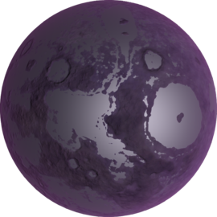

Eve
Eve is the second planet from Kerbol, the closest planet to Kerbin, and KSP's analogue for the planet Venus. It has one small moon: a captured asteroid called Gilly. It is especially notable for its extremely thick, dense atmosphere, which makes aerobraking and returning two of the most dangerous activities in the game. Additionally, Eve has the greatest surface gravity of all the planets, and the second highest escape velocity, second only to Jool. This makes it extremely hard to send missions there because of the Eve Effect.
In- Game Description:
Eve is certainly the purplest object in the solar system. It’s one of the larger, most visible objects, mainly because of its very, very purple tint. It is considered by some to be almost a sister planet to Kerbin. Well, despite the purple, and the toxic atmosphere, and the extreme pressures and temperatures. Actually, it’s not very similar at all, is it? Who are those people?
Home Page